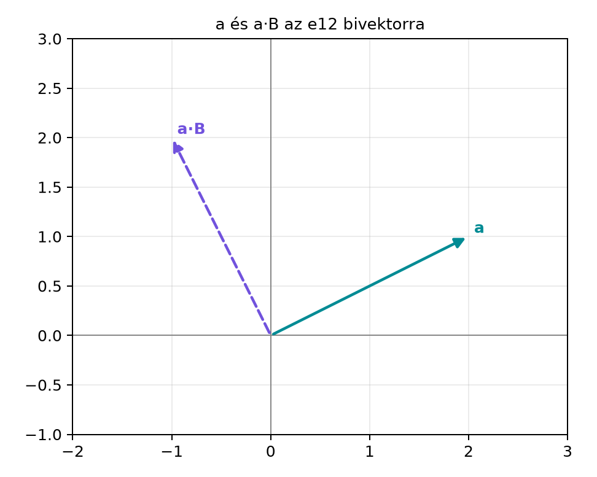

9.1.1 Motiváció: miért szorzunk
vektort bivektorral?
A G(3) algebrában a vektorok mellett megjelentek a bivektorok is. Egy
bivektor nem egyszerűen „két vektor összege”, hanem irányított
síkdarabot hordoz: megmondja, melyik síkban, mekkora területtel és
milyen körüljárási iránnyal gondolunk a kifeszített területre. A
gyakorlatban sokszor találkozunk olyan kérdéssel, hogy egy adott vektor
és egy adott sík miként lép kölcsönhatásba.
Két tipikus fizikai kép is idevezet:
ha
egy merev test forgását leíró szögsebesség-bivektor,
pedig a test egy pontjának helyvektora, akkor a pont sebességének iránya
és nagysága éppen e két objektum szorzatából olvasható ki;
ha egy töltött részecske
sebességgel mozog egy mágneses teret leíró
bivektor által kijelölt síkban, a Lorentz-erő vektora szintén
vektor–bivektor szorzattal kapcsolatos.
A kérdés tehát: mivé lesz egy
vektor és egy
bivektor
geometriai szorzata? Milyen fokszámú részekre bomlik, és mi ezeknek a
részeknek a geometriai jelentése?
9.1.2 Szemléletes kép: a vetület
elforgatása a síkban
Legyen
,
vagyis az
sík irányított egységnyi területű bivektora. Válasszuk az
vektort, amely teljes egészében ebben a síkban fekszik. Számoljuk ki a
szorzatát
-vel:
Az eredmény
.
Ez egy vektor, ráadásul merőleges az eredeti
-ra,
hiszen
.
Hossza ugyanakkora, mint
hossza:
.
A
bivektorral való jobbról szorzás tehát ebben a síkban
-os
forgatást hajtott végre az
iránynak megfelelően.

a és a·B az e12 bivektorra - B = e12
síkja az e1-e2 sík; a = 2e1+e2, a·B = -e1+2e2. A két vektor
merőleges.
A későbbiekben ezt a műveletet általánosítjuk: ha
nem fekszik teljesen a
síkjában, akkor csak a síkba eső vetületét forgatjuk el, és a szorzatnak
lesz egy trivektor része is.
9.1.3 Definíció: a·B és a∧B
A vektorokra már megismertük a geometriai szorzat felbontását
szimmetrikus és antiszimmetrikus részre:
.
Ugyanezt a gondolatot visszük tovább vektorra és bivektorra.
Definíció. Legyen
vektor,
bivektor a G(3) algebrában. A
geometriai szorzat vektorrészét
,
trivektorrészét pedig
jelöli:
Ezzel
A vektor–vektor esethez képest lényeges eltérés, hogy a szimmetrikus
és antiszimmetrikus rész fokszáma felcserélődött: most a szimmetrikus
rész ad trivektort, az antiszimmetrikus rész ad vektort. A
mennyiség a később bevezetendő bal kontrakcióval azonos:
.
9.1.4 Bázispengékkel számolva
Vizsgáljuk meg először a
bázisbivektort, és legyen
A G(3) szorzótáblájából tudjuk, hogy
Innen a szorzat:
A fordított sorrendű szorzásnál használjuk a
azonosságokat, így
Most képezzük a két szorzat különbségének és összegének felét:
A vektorrészben csak
és
,
vagyis a síkba eső komponensek jelennek meg. A trivektorrészben csak
,
vagyis a síkra merőleges komponens jelenik meg. Ez nem véletlen, hanem a
művelet geometriai jelentése.
Ugyanígy kapjuk a másik két bázisbivektorra:
Ha az általános bivektort
alakban írjuk, akkor a linearitás miatt
Ezek a képletek mutatják, hogy
mindig vektor,
pedig mindig trivektor.
9.1.5 Kidolgozott példa
Legyen
Először kiszámítjuk a geometriai szorzatot. A bázisszabályok
szerint:
Tehát
A fordított sorrend:
Most szétválasztunk:
Ellenőrizzük a geometriai jelentést is. A
bivektor síkja az
sík. Az
vektorból ebbe a síkba esik
míg a síkra merőleges rész
Számoljuk ki a síkba eső rész és
szorzatát:
Ez pontosan
.
A merőleges rész szorzata:
ami éppen
.
Végül ellenőrizzük a merőlegességet: az
és az
koordinátájú vektorok belső szorzata
.
A hossz is stimmel:
,
,
és
.
9.1.6 Tétel: a·B mint a vetület
elforgatottja
Az előbbi megfigyeléseket foglalja össze a következő tétel.
Tétel. Legyen
nemnulla bivektor G(3)-ban, és legyen
a
által kifeszített sík. Bontsuk az
vektort a
síkkal párhuzamos és arra merőleges komponensre:
Ekkor:
,
ezért
,
és
,
ezért
,
és
Következésképpen
vektor,
trivektor, és
Ha a bivektort
alakban írjuk, ahol
egységbivektor, akkor
tehát
az
vetületet a
irányítása szerint
-kal
elforgatja, és hosszát
-vel
nyújtja.
Bizonyítás. A Bivektorok a
térben alfejezetben láttuk, hogy G(3)-ban minden bivektor felírható
pengével, azaz
alakban, ahol
és
a
síkot feszíti ki.
Ha
a
síkban fekszik, akkor
lineáris kombinációja. A síkban lévő vektorok a bivektor kifeszítő
vektoraival is megfelelően antikommutálva viselkednek;
jelöléssel számolva
ahol felhasználtuk, hogy a
és a
vektorok a síkban vannak, ezért páronként antikommutálnak, két
áthelyezéssel pedig visszaáll az előjel. Ebből
és
Ha viszont
merőleges a
síkra, akkor
-ra
és
-re
is merőleges, így mindkettővel antikommutál. Két antikommutáló tényező
után:
Ezért
és
Mivel a definíciók lineárisak, az általános
esetben
A
-os
forgatásra vonatkozó állításhoz pedig elég felidézni, hogy az
egységbivektorral való jobbról szorzás a síkjában ugyanúgy viselkedik,
mint a síkbeli forgató elem:
,
és a síkban fekvő vektorokkal antikommutál. A Forgatás a síkban: az exponenciális forgató
alfejezetben láttuk, hogy ez a tulajdonság éppen a
-os
forgatást adja. Így
merőleges
-re,
és hossza
.
A
tényező pedig csak nyújtja ezt az eredményt. ∎
Továbbvitt eredmény. A most kapott
felbontást és a geometriai jelentést használjuk a Vetítés síkra és altérre alfejezetben, ahol síkra
vetítésről és síkra merőleges összetevőkről lesz szó; valamint a Szögsebesség és merev testek pontjainak sebessége
alfejezetben, ahol a merev test pontjainak sebességét éppen
alakban számítjuk ki.
9.1.7 Tipikus hibák és
félreértések
Azt hinni, hogy
skalár.
A vektor–vektor belső szorzat skalár, de vektor–bivektor esetben
vektor. Az elnevezés „belső szorzat”, de a fokszámot mindig a résztvevők
fokszáma határozza meg.
A sorrend felcserélése.
A kommutativitás itt sem áll fenn. A definícióból
így ha valaki
-t
ugyanezzel a képlettel képezné, akkor
adódna. A könyv konvenciója szerint
a bal kontrakció, tehát a sorrendnek jelentése van.
„Ha
merőleges a
síkjára, akkor
.”
Ez téves. A merőlegességből az következik, hogy
,
de
nem nulla, hanem
trivektor.
Előjel a forgatásnál.
A
jobbról szorzást tartalmaz, és a kiválasztott
irányítása szerinti
-os
forgatást ad. A balról szorzás,
,
éppen az ellentétes irányú forgatás, azaz
.
9.1.8 Feladatok
(a) Fogalmi kérdés.
Adott egy
bivektor és egy rá merőleges
vektor. Milyen fokszámú tagokat tartalmaz
?
Igaz-e, hogy
?
(b) Kézi számolás.
Legyen
és
.
Számítsa ki
-t
és
-t.
(c) Bizonyítási feladat.
Mutassa meg, hogy ha
teljes egészében a
bivektor síkjában fekszik, akkor
.
(d) Python-feladat.
A ga3.py mini könyvtár MV3 osztályával
ellenőrizze a kidolgozott példát:
,
.
Számítsa ki
-t
és
-t,
majd képezze a
kifejezéseket.
9.1.9 Megoldások
(a)
Ha
merőleges
síkjára, akkor
a
-vel
kommutál, azaz
.
Ekkor a különbség fele nulla, tehát
A geometriai szorzat így tisztán trivektor:
Tehát
egyetlen, harmadfokú tagot tartalmaz.
(b)
A bivektor komponensei:
,
,
.
A vektor komponensei:
,
,
.
A korábban levezetett képletek szerint:
Behelyettesítve:
A trivektorrész:
Tehát
(c)
Ha
a
síkjában van, akkor
és
Ezért
(d)
Egy lehetséges kód:
from ga3 import MV3B =2* MV3(e12=1)a = MV3(e1=3, e2=-1, e3=2)aB = a * BBa = B * aa_dot_B =0.5* (aB - Ba)a_wedge_B =0.5* (aB + Ba)print("a·B =", a_dot_B)print("a∧B =", a_wedge_B)
Várt kimenet:
a·B = 2.0 e1 + 6.0 e2
a∧B = 4.0 e123
9.1.10 Rövid összefoglaló
Ebben az alfejezetben a vektor és bivektor geometriai szorzatát
bontottuk fel. A definíció szerint
ahol
vektor, és
trivektor. Ha
síkja
,
és
a síkkal párhuzamos, illetve arra merőleges részre bontás, akkor
Geometriailag
az
vetületet a
irányítása szerint
-kal
elforgatja, hosszát pedig
-vel
skálázza. Továbbvitt eredmény. A most megismert
azonosítást használjuk a Vetítés síkra és
altérre alfejezetben, valamint a Szögsebesség és
merev testek pontjainak sebessége alfejezetben, ahol a merev test
pontjainak sebességét
adja.
9.1.11 Források és ellenőrzési
hiányok
Ez az alfejezet a geometriai algebra klasszikus, tankönyvi
eredményeit foglalja össze, a könyv saját jelölési konvencióival. A
vektor–bivektor szorzat felbontása levezethető a G(3) szorzótáblájából.
Külső forrásból nem idéztünk konkrét állítást; ha más forrásból
dolgozol, ellenőrizd a belső szorzat előjelét és a bivektorbázis
sorrendjét, mert ezek szerzőnként eltérhetnek.